サブ課題1：細胞内環境を構築する分子の探索と再構成
1.In situ structural studies of translational control and nonmembrane organelles
Laboratory for Translation Structural Biology
Team leader: Takuhiro Ito
We utilize cryo-electron tomography to investigate translational control and architectures of nonmembrane organelles cell-type and intercellular-position specifically.
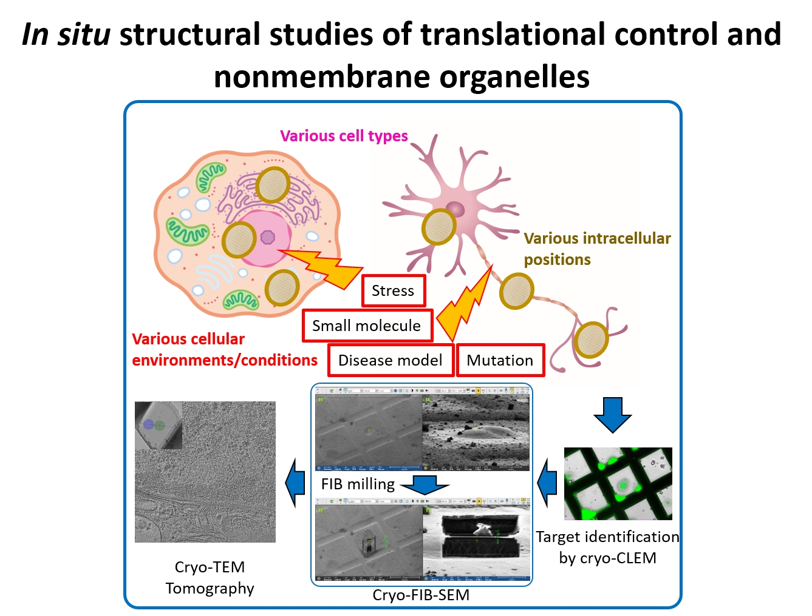
2.Isolation of cellular environments and survey for the substrates
RNA Systems Biochemistry laboratory
Team leader: Shintaro Iwasaki
We aim to isolate the cellular environments through biochemical methods and also identify the protein clients protected by Hero proteins.
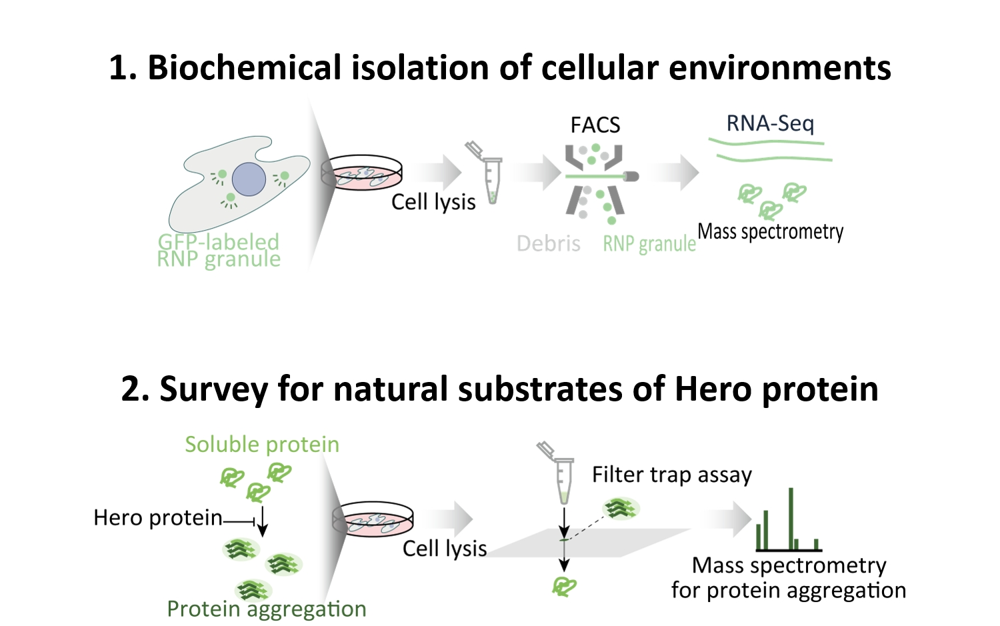
3.Single-molecule measurements in cellular environment
Cellular Informatics laboratory
Team leader: Yasushi Sako
We develop novel microscopic techniques to address the biophysical features maintained by cellular environments and also the that of biomolecules in the cellular environment.
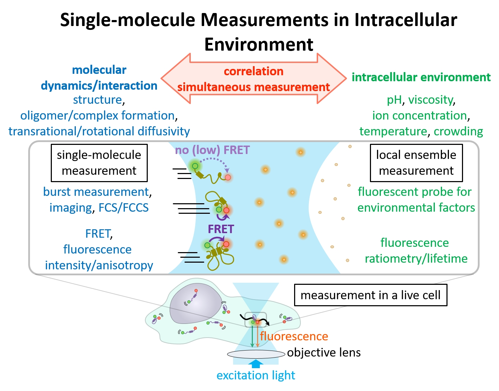
4.Dissection of intracellular environments using chromosome reconstitution assays in vitro
Chromosome Dynamics Laboratory
Team leader: Tatsuya Hirano
We use in vitro reconstitution assays to investigate the intracellular environments that enable proper assembly of large-scale chromosome structures.
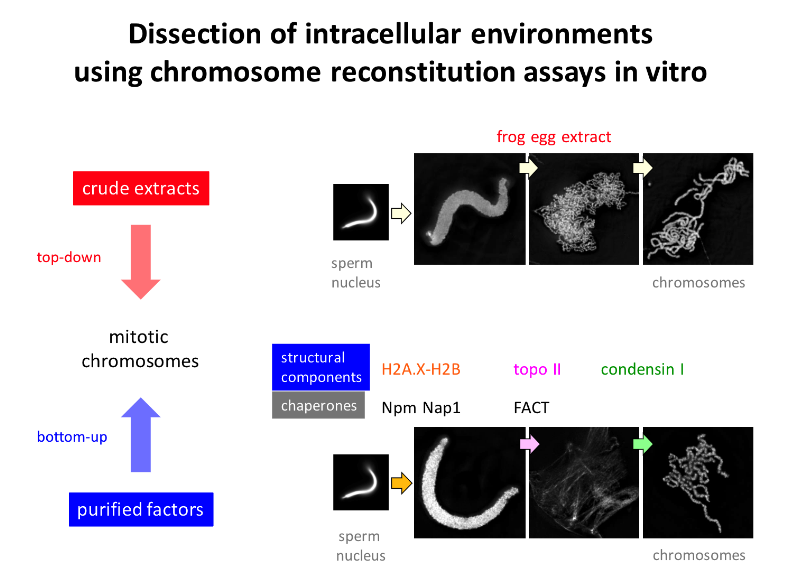
5.Deciphering cellular dark matter for light response in plants
Synthetic Genomics Research Group
Team leader: Minami Matsui
We explore transcriptome of plant-genes by monochromatic lights and examine metabolome of plant-specific cell divisions.
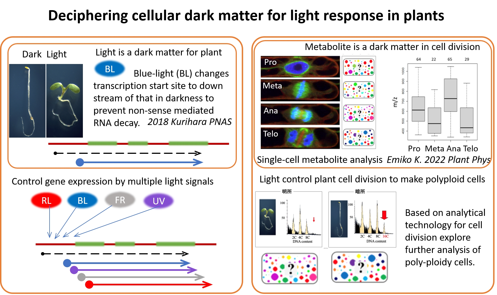
サブ課題2：細胞内環境の原子・分子レベルでの可視化
1.Structure and dynamics of biomolecules in cellular environments
Laboratory for Cellular Structural Biology
Team leader: Takanori Kigawa
We develop a new multi-scale simulation technique to investigate relations between sWe elucidate biomolecular structural dynamics in the cellular environment by using NMR spectroscopy and information science methodologies.
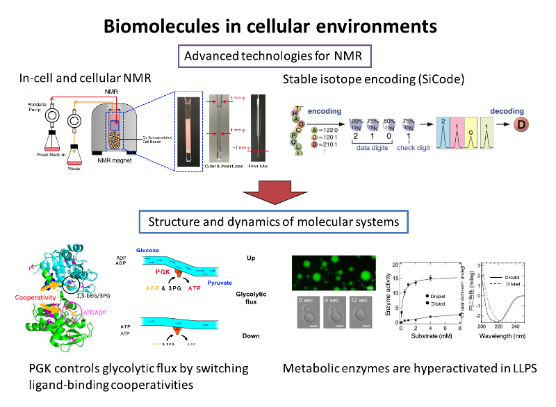
2.Structural biology utilizing the Hero proteins
Laboratory for Protein Functional and Structural Biology
Team leader: Mikako Shirouzu
We investigate the effects of the Hero proteins on the protein complex preparation and structure determinations using cryo-electron microscopy.
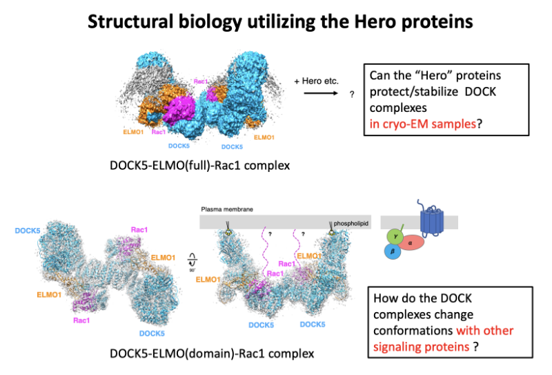
3.Multi-scale simulations of protein structures and interactions in the cell
Theoretical molecular science laboratory
Team leader: Yuji Sugita
We study disordered protein structures and interactions with other macromolecules in crowded cellular environments using multi-scale molecular dynamics simulations
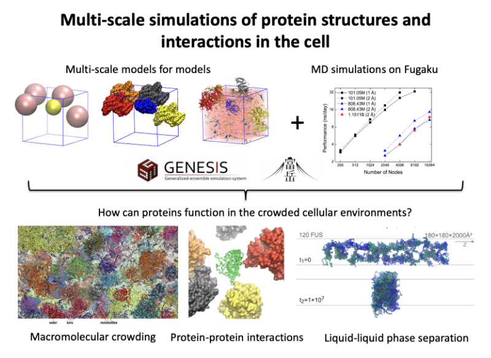
4.Structural analyses of chromatin transcription and environmental factors
Laboratory for Transcription Structural Biology
Team leader: Shun-ichi Sekine
We perform cryoEM analyses of transcription complexes to reveal the roles of intrinsically disordered domains or noncoding RNAs in chromatin transcription
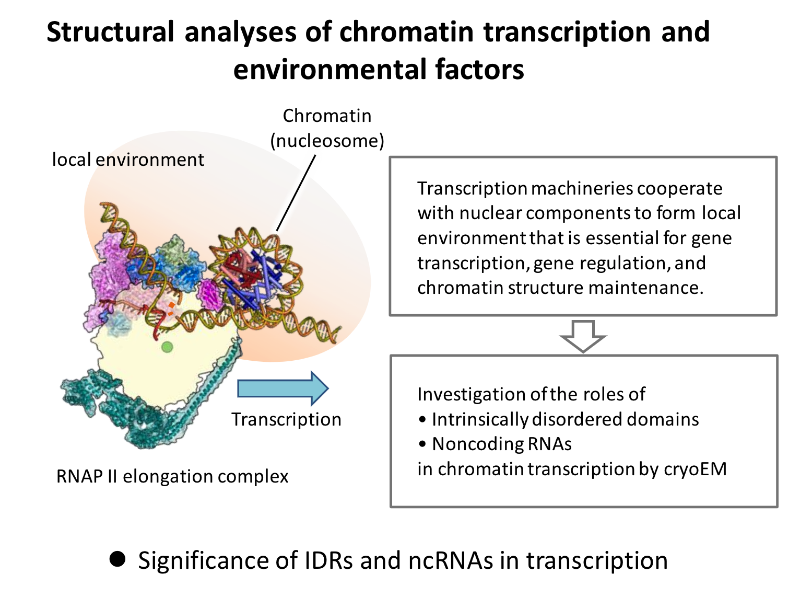
5.NMR spectroscopy of structures and aggregations of intrinsically disordered proteins
RIKEN Center for Brain Science, Laboratory for Protein Conformation Diseases
Team Leader: Motomasa Tanaka
We develop a new in vitro reconstitution and cell model systems and investigate protein dynamics during amyloid formation and disaggregation by various biophysical methods including NMR spectroscopy.
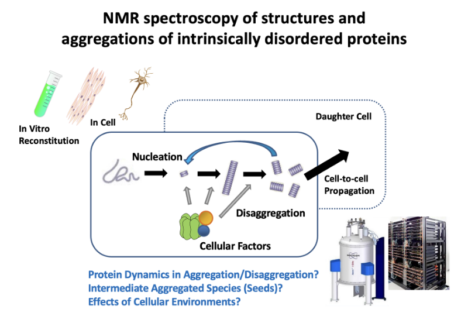
6.Visualization of Intracellular Biomolecules by Small Molecule Turn-On Fluorescent Probes
Molecular Synthesis and Function Laboratory
Team Leader: Takuya Hashimoto
We develop small molecule fluorescent probes which selectively bind to biomolecules in a covalent fashion and turn fluorescent.
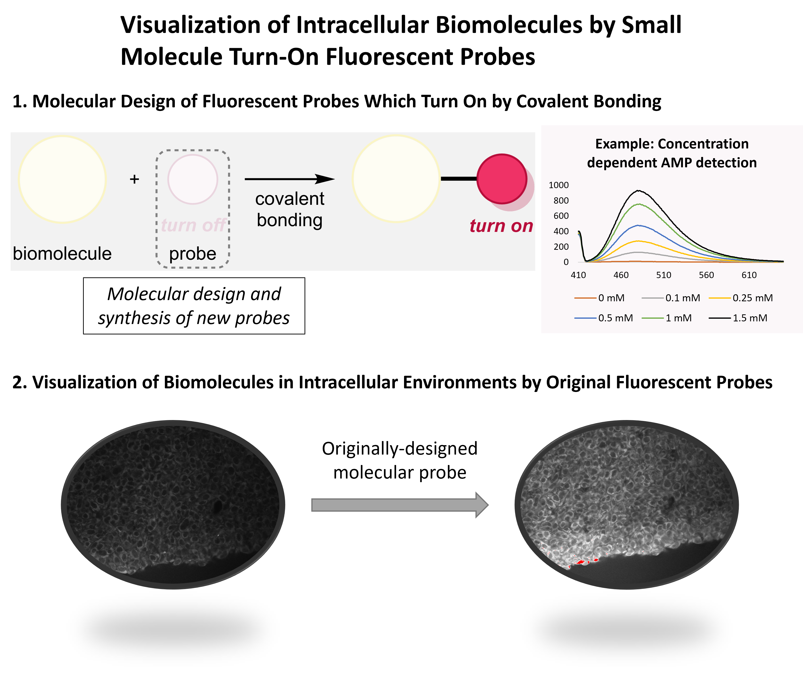